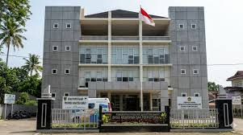
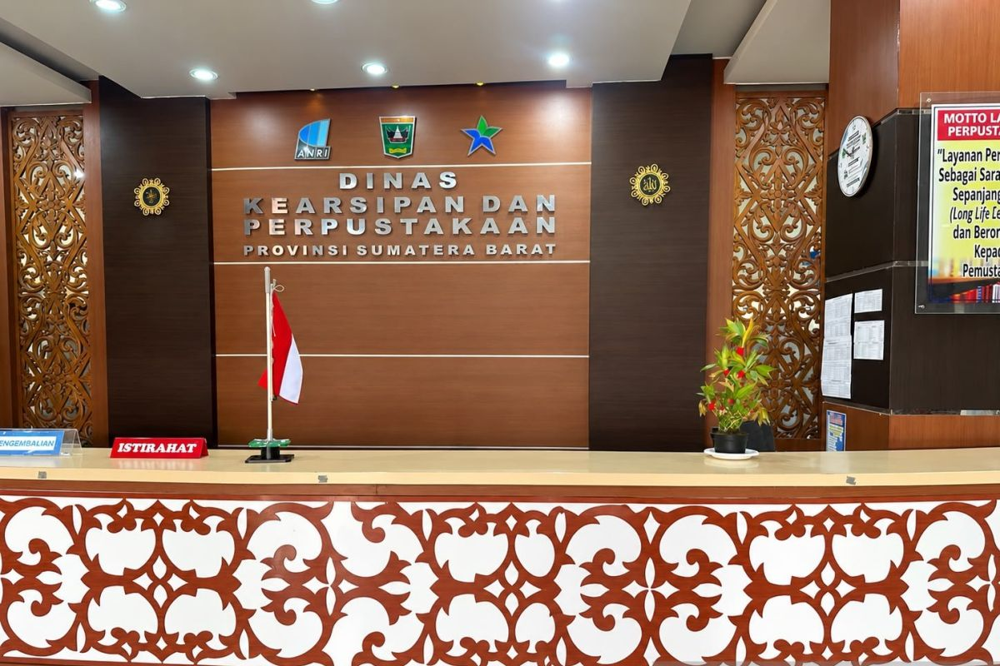
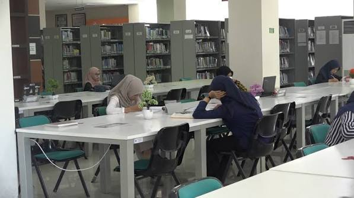

Perpustakaan Provinsi Sumatera Barat merupakan salah satu perpustakaan yang menjadi tempat favorit saya untuk membaca, mencari informasi, dan menambah pengetahuan. Perpustakaan ini menyediakan berbagai koleksi dan layanan yang dapat dimanfaatkan oleh masyarakat.

Gedung Perpustakaan Provinsi Sumatera Barat menjadi tempat yang nyaman bagi masyarakat untuk memperoleh berbagai sumber informasi.

Layanan sirkulasi membantu pemustaka dalam proses peminjaman dan pengembalian koleksi perpustakaan.

Ruang baca menjadi salah satu fasilitas favorit karena dapat digunakan untuk membaca, belajar, dan mencari informasi dengan nyaman.